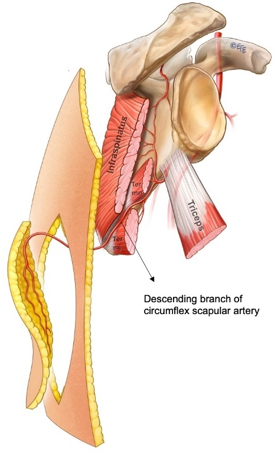

背中（肩甲部＝けんこうぶ、肩甲骨のあたり）の皮膚を、血流を保ったまま体の別の場所へ移す「肩甲皮弁（けんこうひべん）」の血管解剖と挙上（きょじょう＝皮弁を切り起こすこと）の方法を、35体の献体（けんたい＝解剖用のご遺体）の詳細な解剖にもとづいて示した論文です。この皮弁は、肩甲下動脈（けんこうかどうみゃく）から分かれる肩甲回旋動脈（けんこうかいせんどうみゃく＝circumflex scapular artery）を血流源とします。著者は、血管の走り方が人によってほとんど変わらず（解剖が一定）、太く長い血管の茎（くき）を持ち、採取したあとの傷を縫い縮めて閉じられる（一次縫合）といった利点を挙げ、マイクロサージャリー（顕微鏡下で血管をつなぐ手術）で使える遊離皮弁（ゆうりひべん）としての肩甲皮弁を体系立てて示しました。
背景 ― 「血管が一定で採りやすい皮弁」が求められていた
1970年代後半、切り離した皮膚のかたまりを顕微鏡下で移植先の血管につなぎ直す遊離皮弁（マイクロサージャリー）が実用化されはじめた時期でした。しかし当時使えたドナー（提供部位）は限られており、鼠径（そけい）皮弁のように血管の個人差が大きく、挙上がむずかしいものもありました。血管の走り方が一定で（＝どの人でも同じ場所に同じように走っている）、太く長い茎を持ち、採取後の傷が目立たない場所が、次のドナーとして求められていたとされます。
そこで着目されたのが、背中の肩甲部の皮膚です。背中の皮膚は厚くて丈夫で、範囲も広く、肩甲部はもともと毛が少ない場所です。この領域は、脇の下を走る腋窩動脈（えきかどうみゃく）から肩甲下動脈、さらに肩甲回旋動脈という比較的太い血管に養われており、皮弁の血流源として好都合でした。
著者の dos Santos（ドス・サントス）は、この肩甲部の皮膚を遊離皮弁として使えることに着目し、その血管解剖と挙上のしかたを解剖学的に確かめました（肩甲皮弁の最初の記載は、この英語論文より前にポルトガル語の雑誌で報告されたとされます）。
この論文がしたこと
著者は、35体の献体を解剖し、合計70皮弁を実際に切り起こして（挙上して）、肩甲皮弁を養う血管の走り方を確かめたと述べています。抄録では、これを「新しい肩甲皮弁（a new scapular flap）」と呼び、著者自身の経験にもとづく報告だとしています。
この皮弁の茎（血流の通り道）は、抄録では「皮膚肩甲動脈（cutaneous scapular artery）と2本の静脈」で構成される、と記されています。これは今日いう肩甲回旋動脈（circumflex scapular artery）の皮膚へ向かう枝にあたります。著者は、この茎が皮弁として使うのに十分な太さ・長さ・口径（こうけい＝血管の直径）を持つと述べています。
そのうえで抄録は、この肩甲皮弁の主な利点として次の5点を挙げています。すなわち、(1)血管解剖が一定であること、(2)茎の大きさ・長さ・口径が適切であること、(3)手術での剥離（はくり＝組織をはがして皮弁を起こす操作）が容易であること、(4)採取部を一次縫合（いちじほうごう＝植皮を足さずに、傷の縁どうしを縫い縮めて閉じること）できること、(5)残る傷（瘢痕＝はんこん）が小さいこと、です。
解剖と手技の要点
ここから先は、原著の抄録には血管の走行の細部までは書かれていないため、この論文とその後の解剖学的研究で整理されてきた一般的な知見です。肩甲皮弁の血流源である肩甲回旋動脈は、腋窩動脈から出る肩甲下動脈の枝で、比較的太い血管とされます。
この動脈は、背中側では「三角間隙（さんかくかんげき）」という筋肉に囲まれた隙間を通って皮膚の側に出てきます。三角間隙は、上を小円筋（しょうえんきん）、下を大円筋（だいえんきん）、外側を上腕三頭筋（じょうわんさんとうきん）の長頭で囲まれた隙間です。ここを通り抜けた動脈は、皮膚へ向かう枝（皮枝）に分かれます。
皮枝には、横向き（水平）に走る枝と、縦向き（下方）に走る下行枝があるとされます。横向きの枝を軸に、肩甲骨の上を横長に皮膚を採るのが肩甲皮弁で、原著の dos Santos はこの横向きのデザインを提案したとされます。一方、下行枝を軸に、肩甲骨の外側縁に沿って縦（斜め）長に採るのが傍肩甲皮弁（ぼうけんこうひべん＝parascapular flap）で、こちらは Nassif（ナシフ）らが1982年に別に報告した縦向きのバリエーションとされます。いずれも、皮膚と皮下脂肪・筋膜をひとかたまりにして起こす筋膜皮弁（きんまくひべん）で、筋肉そのものは犠牲にしません。

結果
この論文の抄録には、実際の患者での症例数や生着率（せいちゃくりつ＝移した皮弁が血流を保って生き残る割合）といった臨床成績の数値はありません。抄録で数として示されているのは、35体の献体・合計70皮弁を解剖したという裏づけまでです。したがって本ページでも、臨床成績に関する数値は記載しません。
抄録から確認できる「利点」は、前の項でも挙げた5点です。すなわち、血管解剖が一定であること、茎の大きさ・長さ・口径が適切であること、剥離が容易であること、採取部を一次縫合できること、残る傷が小さいこと、です。
一方で、抄録には限界も明記されています。大きな組織の欠損（loss of substance）を埋める必要がある場合には、この方法は勧められない、とされています。また、マイクロサージャリーによる肩甲皮弁の最初の臨床成功例は、1979年10月にパリで行われたと記されています。
意義 ― 定番の遊離皮弁になった理由
この論文は、肩甲皮弁の血管解剖と挙上法を体系立てて示した代表的な報告として広く引用されています。血管の走り方が人によってほとんど変わらないため、どの症例でも安定して同じように挙上でき、初心者にも扱いやすいことが大きな強みとされます。
評価される理由は、抄録が挙げた利点とよく対応しています。茎が太く長いことは、移植先で血管を縫いやすく、遠くまで届くことを意味します。採取部を一次縫合できて傷が目立たず、筋肉を犠牲にしないため機能障害が少ないことも、患者にとっての利点です。背中の皮膚は厚くて丈夫なため、荷重や摩擦のかかる場所の再建にも向くとされます。
この肩甲回旋動脈という血管系は、その後さまざまに展開しました。下行枝を軸に縦向きに採る傍肩甲皮弁、肩甲骨を一緒に含めて骨ごと移す複合皮弁（骨皮弁）、さらには血管一本（穿通枝）を追いかけて筋肉を切らずに皮膚だけを起こす穿通枝皮弁（circumflex scapular artery perforator flap）へと発展し、今日でも頭頸部・四肢・体幹の再建で使われる定番のドナーのひとつとなっています。
この論文の要点
- 35体の献体・合計70皮弁の解剖にもとづき、背部（肩甲部）の皮膚を養う血管の走り方が一定であることを示した。
- 皮弁の茎は「皮膚肩甲動脈（cutaneous scapular artery）と2本の静脈」で構成されると記され、これは今日いう肩甲回旋動脈（circumflex scapular artery）の皮枝にあたる。
- 主な利点は、(1)血管解剖が一定、(2)茎の大きさ・長さ・口径が適切、(3)剥離が容易、(4)採取部を一次縫合できる、(5)残る傷が小さい、の5点とされた。
- 一方で、大きな組織欠損の再建には勧められないと明記された。
- マイクロサージャリーによる肩甲皮弁の最初の臨床成功例は、1979年10月にパリで行われたと記されている。
- 抄録には症例数・生着率などの臨床成績の数値はなく、本ページでも成績の数値は記載しない。
用語ミニ辞典
- 肩甲皮弁（scapular flap）
- 背中の肩甲部の皮膚を、肩甲回旋動脈の横向きの皮枝を血流源として、肩甲骨の上に横長に採る皮弁。血管解剖が一定で挙上しやすく、皮膚が厚く丈夫で、採取部を一次縫合できるのが特徴。
- 傍肩甲皮弁（parascapular flap）
- 肩甲回旋動脈の下行枝（縦向きの枝）を軸に、肩甲骨の外側縁に沿って縦（斜め）長に採る皮弁。肩甲皮弁の縦向きバリエーションで、Nassif らが1982年に報告したとされる。より長い皮膚を採りやすい。
- 肩甲回旋動脈（circumflex scapular artery）
- 肩甲下動脈から分かれ、三角間隙を通って背中側の皮膚へ達する動脈。肩甲皮弁・傍肩甲皮弁の血流源。原著の抄録では、皮弁の茎を作る血管を「皮膚肩甲動脈（cutaneous scapular artery）」と表現している。
- 肩甲下動脈（subscapular artery）
- 脇の下を走る腋窩動脈から分かれる太い動脈。ここから肩甲回旋動脈と胸背動脈（きょうはいどうみゃく）が分かれる。肩甲皮弁の血流の大もとにあたる。
- 三角間隙（さんかくかんげき）
- 上を小円筋、下を大円筋、外側を上腕三頭筋の長頭で囲まれた筋肉のあいだの隙間。肩甲回旋動脈がここを通って背中側の皮膚へ出てくる、皮弁挙上の目印になる場所。
- 遊離皮弁（ゆうりひべん）
- 皮膚のかたまりを血管ごと切り離し、顕微鏡下（マイクロサージャリー）で移植先の血管に縫い直して移す皮弁。肩甲皮弁は遊離皮弁の代表的なドナーの一つ。
- 筋膜皮弁（きんまくひべん）
- 皮膚・皮下脂肪に、その下の筋膜（きんまく＝筋肉を包む膜）を含めてひとかたまりに起こす皮弁。筋肉そのものは犠牲にしない。肩甲皮弁・傍肩甲皮弁はこのタイプ。
- 一次縫合（いちじほうごう）
- 皮弁を採取したあとの傷を、植皮などを足さずに、傷の縁どうしを縫い縮めてそのまま閉じること。肩甲皮弁の利点の一つで、採取部の傷が目立ちにくくなる。
本ページは形成外科の学習・参照を目的とした編集部によるオリジナルの日本語解説で、原著（英語）の逐語訳・全文転載ではありません。正確な内容・数値・図は必ず上記リンク先の原著をご確認ください。
掲載している図は、原著の図ではありません。原著の図は出版社が著作権を持ち転載できないため、同じ術式・同じ解剖を扱った無料公開（オープンアクセス／CC BY）論文の図を、出典とライセンスを明記して引用しています。